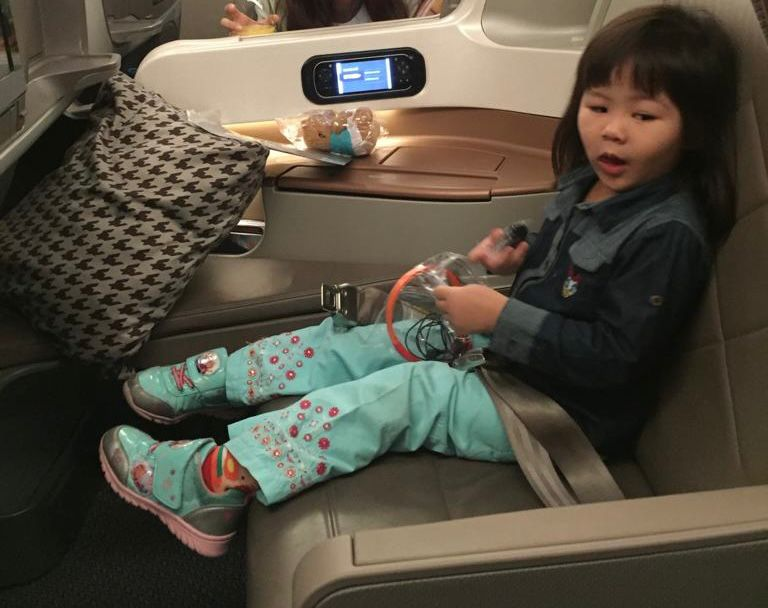

Tentang Saya
Nama: Emily Margaret Yang
Kelas / No. Absen: 93/9
Tempat Lahir: Jakarta, Indonesia
Tanggal Lahir: 17 Oktober 2012
Email: emily_10049@smp.santaursulajakarta.sch.id
Instagram: emily.margaret.yang
Website ini saya buat sebagai bagian dari proyek kolaborasi mata pelajaran IPS, PPKn, dan TIK dengan tujuan untuk mengampanyekan pentingnya SDGs 4 (Pendidikan Berkualitas), meningkatkan kepedulian terhadap pemerataan fasilitas belajar di sekitar kita, serta mengajak teman-teman pelajar untuk lebih semangat dan efektif dalam belajar.